Forensic analysis with diferent Linux file systems.¶
Objetivo:¶
Aprender a acceder a las posibles evidencias contenidas en imágenes de disco generadas en sistemas informáticos que ejecutan sistemas operativos Linux.
Utilización de herramientas de recuperación de archivos borrados: foremost, photorec y scalpel
Materiales¶
Distribución Linux Kali Linux.
Herramientas propias del sistema operativo: mount, losetup, fdisk, etc.
Herramientas forenses: Sleuthkit, foremost, scalpel y photorec.
Información de Internet
Una de las tareas más habituales quehacer diario de un profesional forense informático es realizar imágenes forenses de discos duros (teniendo en cuenta todos los requisitos relativos a la cadena de custodia) para posteriormente realizar un análisis de los contenidos del mismo.
En esta situación, se hace imprescindible disponer de destrezas y habilidades para conocer las peculiaridades de los distintos sistemas de archivos que utilizan los SO Linux, para ser capaces de acceder a la información contenida en estas imágenes.
Se nos pueden presentar situaciones donde aparezcan configuraciones más sofisticadas, tipo LVM, ZFS o LUKS encrypted, que hagan más difícil el acceso a la información almacenada.
Para la realización de la práctica se requiere que se descarguen las siguientes imágenes:
Datos, se trata de un dispositivo de disco normal (ext4) donde sería necesario montar las particiones que se identifiquen y aplicar en ellas herramientas para la recuperación de datos borrados (photorec, foremost y scalpel).
LVM, se trata de un disco que hace uso de volúmenes lógicos. Habrá que dar los pasos necesarios para “desenmascarar” los grupos de volúmenes, y volúmenes lógicos definidos para acceder a su información.
Cifrado, se trata de un disco cifrado (contraseña “usuario”) con la tecnología propia de Linux (LUKS). Sería necesario acceder a la información que contenga
Solution¶
Datos¶
Mount the image using the following commands. Note that the loop number may vary dapending if there are other images mounted. Start mounting the first loop (loopXp1):
sudo losetup -fP datos.dd
mkdir evidences
sudo mount -o ro /dev/loop1p1 evidences

There is only one directory called “recup_dir.1”, check the content of said directory:
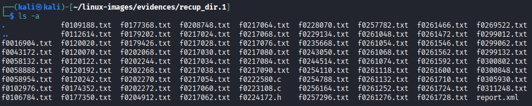

It contains multiple files, umount the first loop and mount the second one.
sudo umount /dev/loop1p1
sudo mount -o ro /dev/loop1p2 evidences
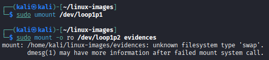
However, the loop cannot be mounted as it is part of the swap. Them, mount the third and last loop:
sudo mount -o ro /dev/loop1p3 evidences
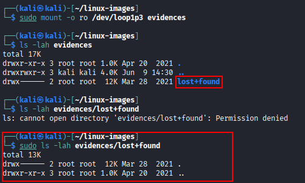
An empty lost+found directory is found.
Use photorec in order to recover files. Launch it and select the first partition:
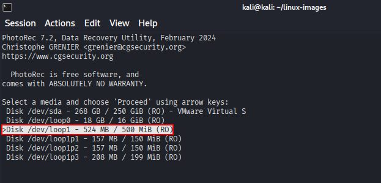
Select “Linux”.
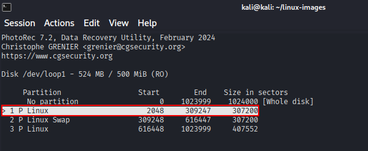
Select “ext2/ext3”.
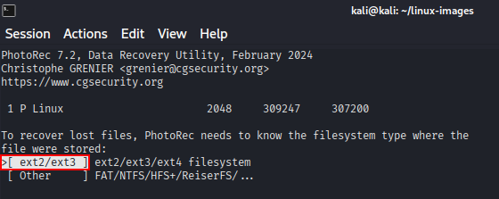
Select “Whole” to recover as much files as possible.
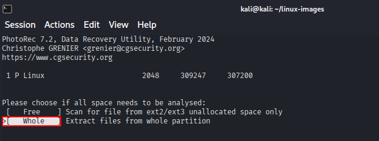
As shown below, many files have been recovered.
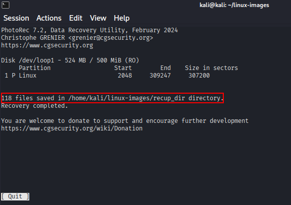
Repeat the same process for the third partition.
After performing that, many files have been recovered:
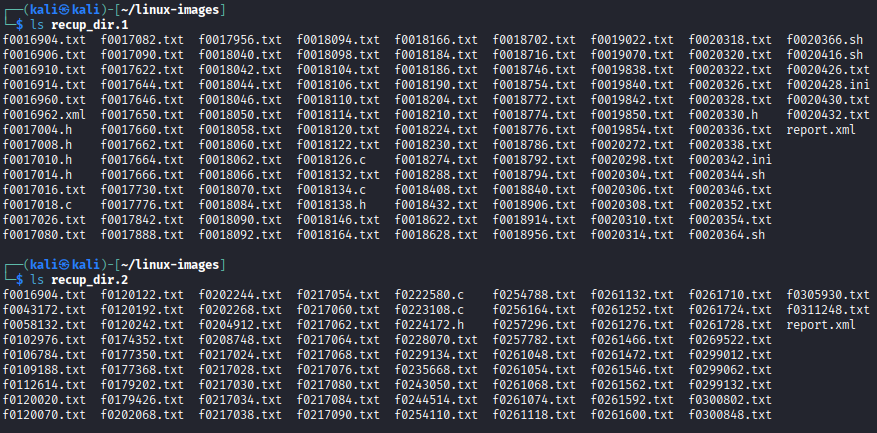
LVM¶
Mount the partition and verigy the file system type.
sudo losetup -fP lvm.dd
lsblk -f

As shown, it is a LVM2 file system.
Activate LVM to see the logical partitions.
sudo vgscan
sudo vgchange -ay
lsblk
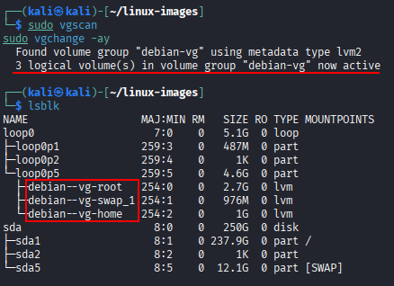
Mount the partitions and ensure that the files can be shown perfectly:
sudo mount /dev/debian-vg/root evidences/root/
sudo mount /dev/debian-vg/home evidences/home/

Cifrado¶
Mount the disk and ensure that it is a encrypted disk:
sudo losetup -fP cifrado.dd
lsblk
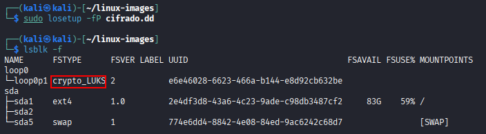
It is encrypted using LUKS as shown above.
More information about the disk can be extracted using the following command:
sudo cryptsetup luksDump /dev/loop0p1
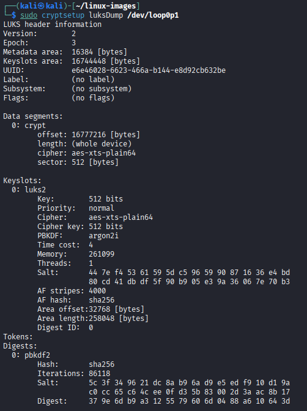
To decrypt the file, simply run the folliowing command and write the “usuario” password. Then, all the files will be correctly deencrypted.
sudo cryptsetup luksOpen /dev/loop0p1 decrypted
sudo mount /dev/mapper/decrypted evidences